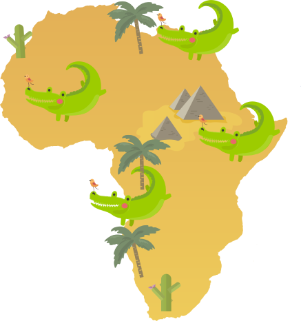
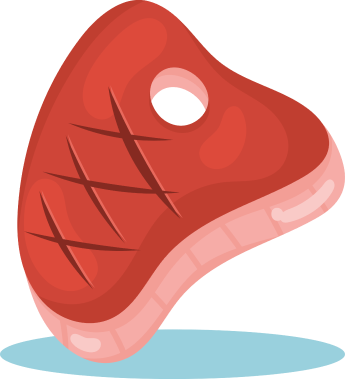

Son fascinantes reptiles semiacuáticos conocidos por apariencia primitiva y sus habilidades depredadoras.
Hábitat: Hábitat: Ríos, lagos y manglares, en regios tropicales y subtropicales.


Dieta: Son cazadores desde peces hasta mamíferos grandes. Conocidos por su táctica de asecho y emboscada.
Características Físicas: Piel escamosa y dura, adaptada para la vida en el agua, mandíbulas fuertes y dientes afilados para la caza.